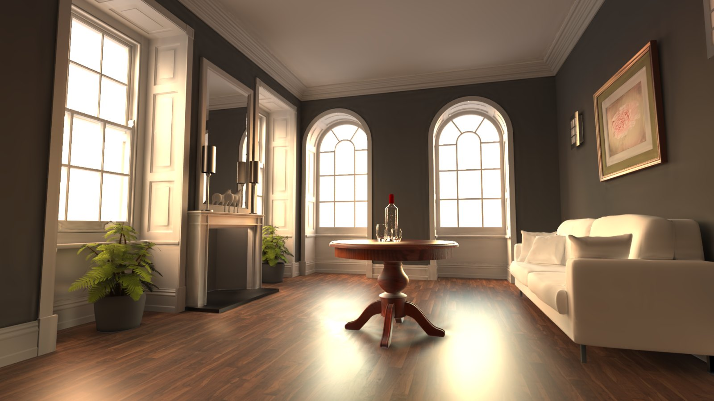
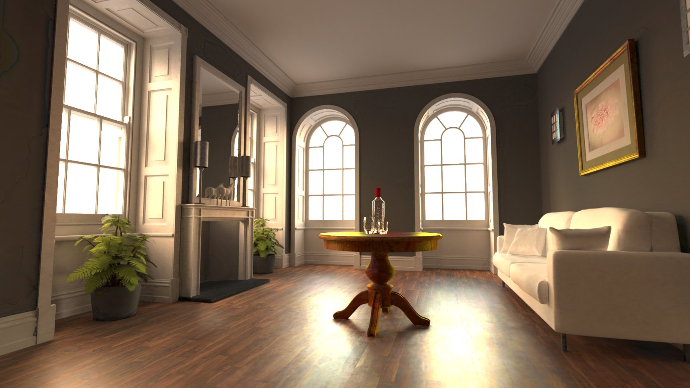
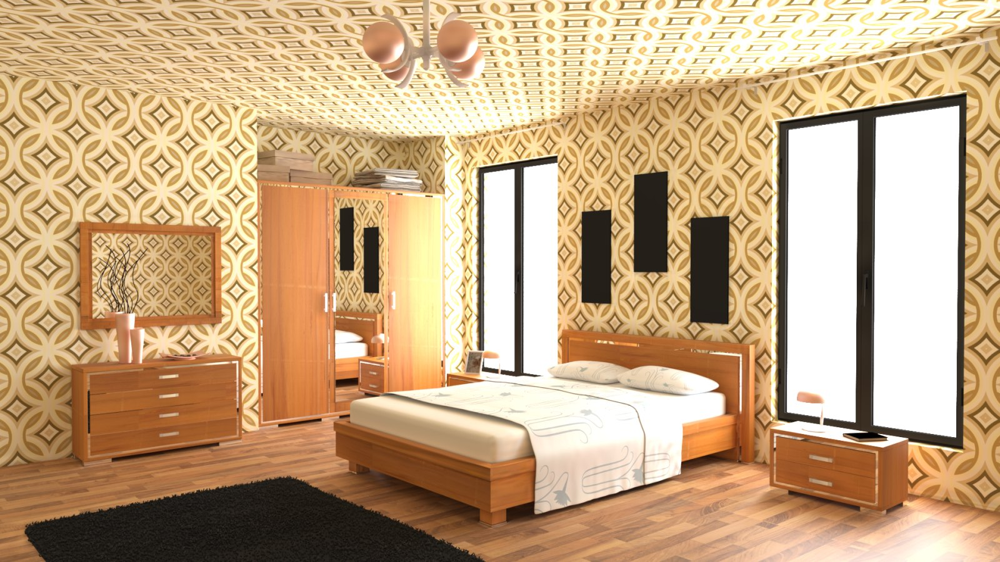
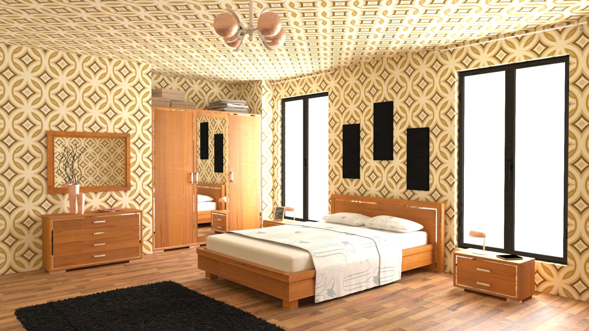
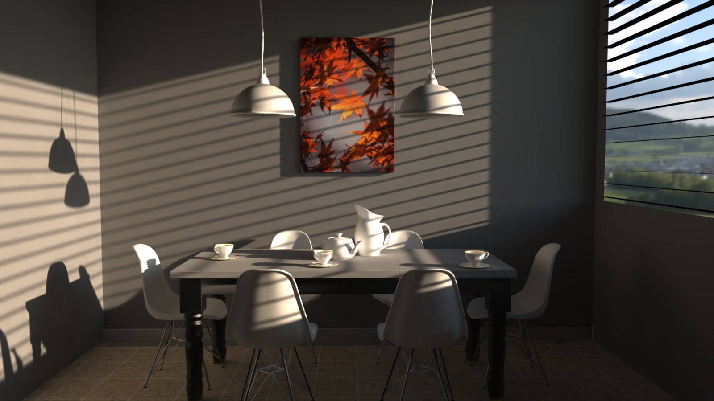
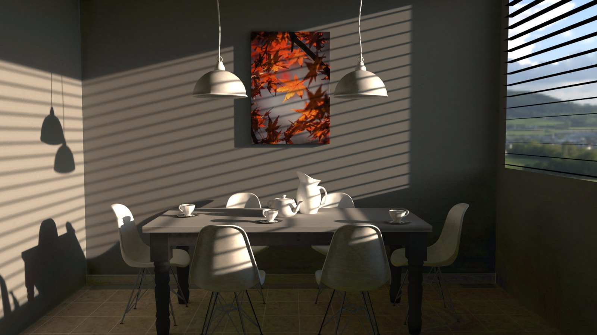
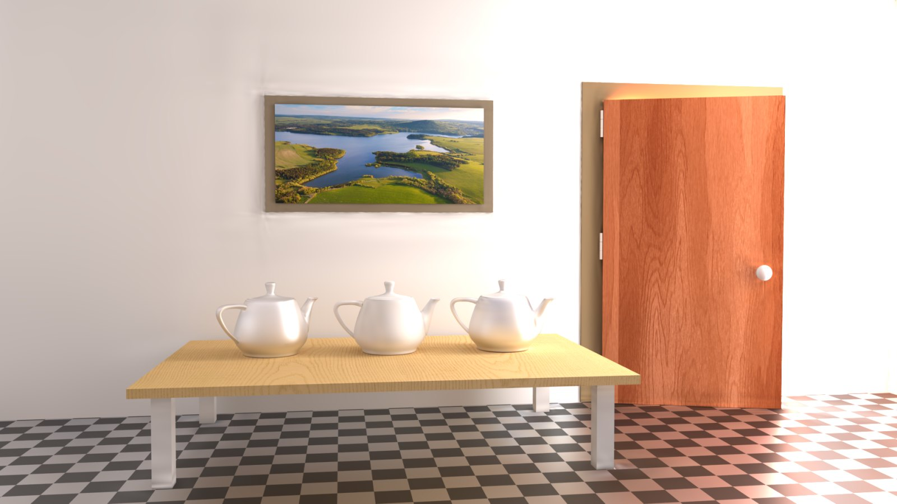
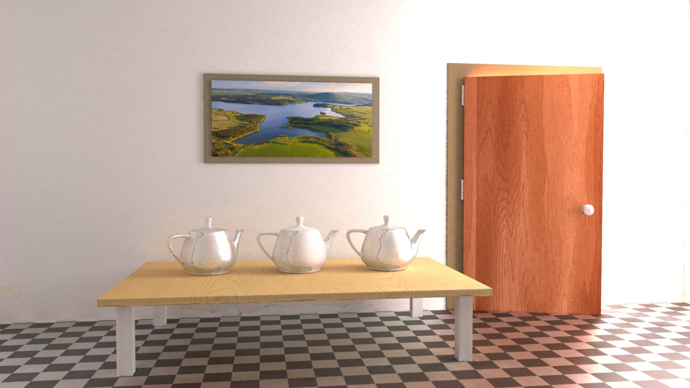

abstract
We present a novel method for computing global illumination by expressing the solution to the light transport equation as a 13D Gaussian mixture model over positions, directions, surface normals and material properties. We show that including scene properties inside the Gaussian drastically reduces the number of functions needed and speeds up evaluation. As opposed to traditional light transport methods based on Neumann series, the parameters of our model are estimated directly by minimising the residual of the rendering equation.
While both optimisation and rendering require repeated evaluations of a linear combination of high-dimensional Gaussian functions, we introduce an efficient culling strategy that keeps the optimisation tractable and produces renderings in real time. Our representation yields fast, view-independent solutions to the light transport equation, with rendering times on the order of milliseconds and a fraction of the memory requirements of conventional neural rendering approaches.
renderings
Live capture of the models at 1920×1080, 1 spp on six scenes, and the flattened Gaussians they are made of. Because the kernel has a directional component, that visualised support moves with the camera.
-
bedroom28.7K gaussians · 4.4 MB -
dining room35.2K gaussians · 5.4 MB -
veach ajar27.1K gaussians · 4.1 MB -
staircase42.2K gaussians · 6.4 MB -
chair28.2K gaussians · 4.3 MB -
rings6.5K gaussians · 1.0 MB
fig.2 Our Gaussian model adapts to geometric complexity, while capturing caustics, glossy and specular surfaces and textures, all from a few megabytes. Frame times run 10–17 ms at 1 spp, 1920×1080, on one RTX 4080 SUPER.
comparisons
64 spp renders of the same viewpoint at 1920×1080, against Neural Radiosity [1] under two feature encodings — the multi-resolution hash grid of Müller et al. [2] and the vertex features of Su et al. [3] — trained for 1.5 to 4.5 hours.
living room


NR (hash grid): FLIP 0.1326 · 35.7 MB — ours 0.1177 · 5.8 MB
bedroom


NR (hash grid): FLIP 0.0967 · 35.7 MB — ours 0.0824 · 4.4 MB
dining room


NR (hash grid): FLIP 0.2455 · 35.7 MB — ours 0.0831 · 5.4 MB
veach ajar


NR (hash grid): FLIP 0.1978 · 35.7 MB — ours 0.0641 · 4.1 MB
fig.3 Our method uses a fixed 30K iterations on every scene. Model size behaves differently for the two encodings: the hash grid is a fixed 35.7 MB irrespective of the scene, while vertex features range from 0.9 MB to 26.4 MB. Our representation is bounded by the number of Gaussians rather than by either grid resolution or tessellation and stays between 1 MB and 5.9 MB.
bibtex
@inproceedings{attimont2026gaussian,
author = {Attimont, Patrick and Subr, Kartic and Soler, Cyril},
title = {Gaussian Light Transport},
year = {2026},
isbn = {9798400728426},
publisher = {Association for Computing Machinery},
address = {New York, NY, USA},
doi = {10.1145/3829340.3842373},
booktitle = {SIGGRAPH Asia 2026 Conference Papers},
location = {Kuala Lumpur, Malaysia},
series = {SA Conference Papers '26}
}